在離新川里很遠的亂石灘決定取消往新川里壁畫村這行程, 匆匆掉頭循原路離開, 希望在天黑前返回表善海灘海邊! 走了一會, 發覺如果繼續循原路走, 路途頗為遙遠, 天黑前也不可能抵達表善海灘海邊, 隨時被困荒野, 便決定冒險改為往高速公路, 然後乘車返回表善市區, 當返回紅、白燈塔環抱漁港的路口時, 這時太陽快下山了, 便決定在那裡轉右, 戰戰兢兢的走進村莊, 走了一會, 發覺沿途的房屋外牆都繪了很漂亮的壁畫, 這時才知道, 這裡便是新川里壁畫村, 有失而復得的感覺!
那麼千辛萬苦和驚險才來到新川里壁畫村, 也肯定村莊中的道路可以通往高速公路, 頓時鬆了一口氣, 當然慢慢順道遊覽啦!
穿過兩個村莊後, 迎面是一條頗為寬闊的馬路, 兩旁都是房屋, 應該不是高速公路吧!
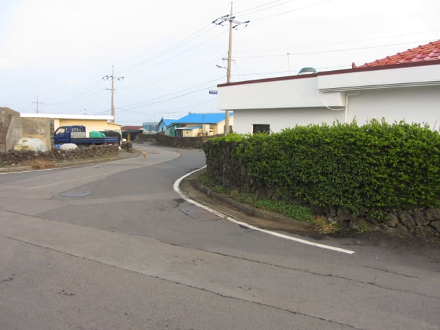
接著沿馬路走, 兩旁的房屋仍然都是壁畫。這時開始知道, 新川里壁畫村可能是由多個村落組成的, 所以面積十分廣闊, 壁畫的內容更多、更廣泛。
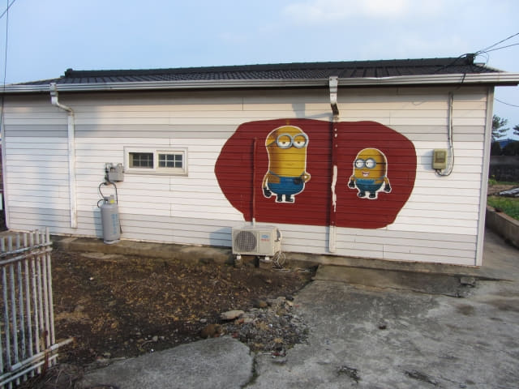
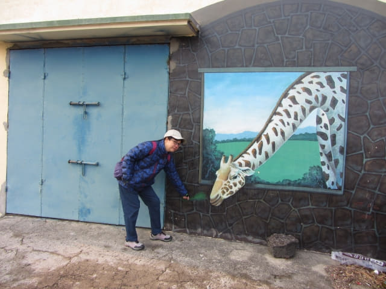
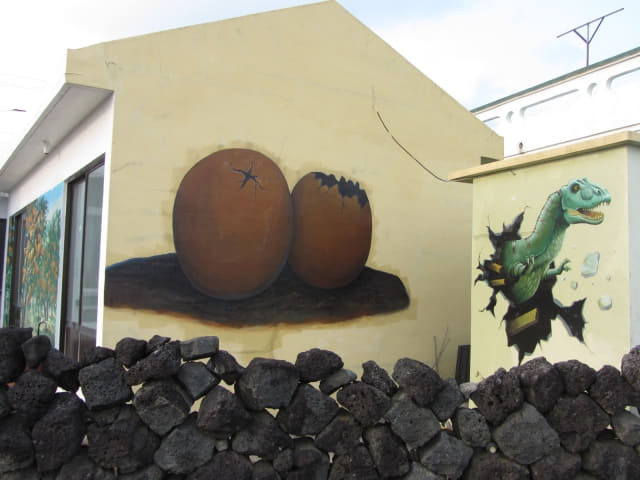
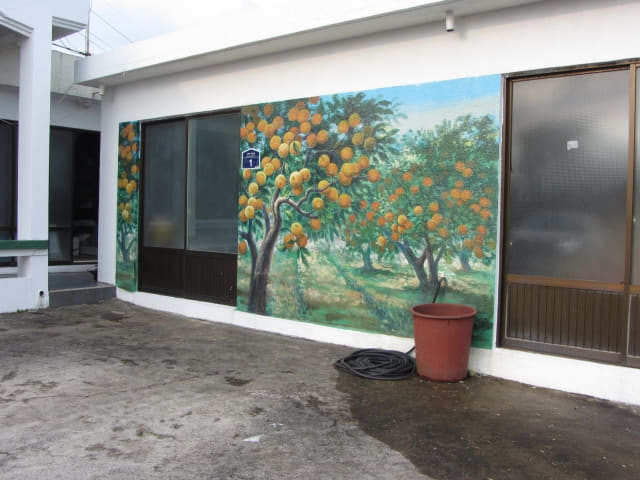
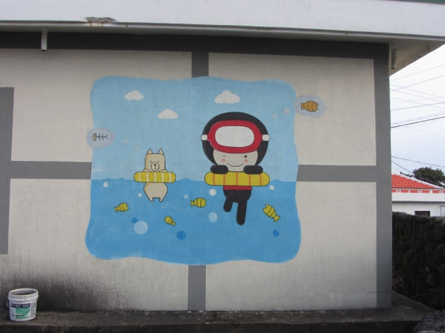
新川里壁畫村內的豪宅。
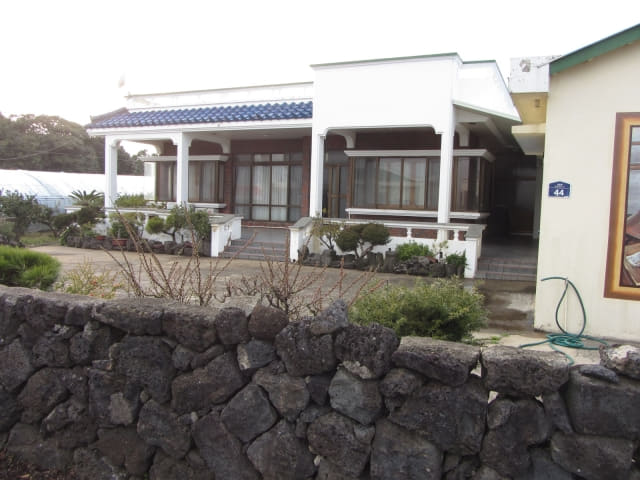
壁畫真是很生動有趣。韓國的壁畫村也去過不少, 這個面積應該是最大的, 但卻是最寧靜的, 竟然半個遊客也沒有! 也倒是, 交通太不便利, 而且表善也不是旅遊熱門地方。
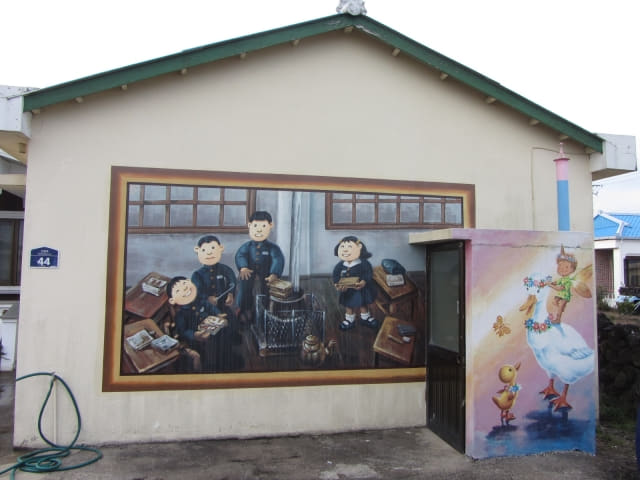
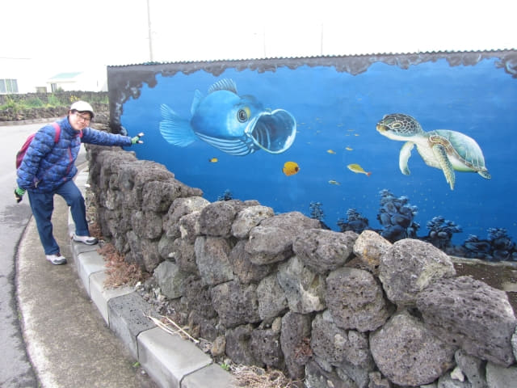
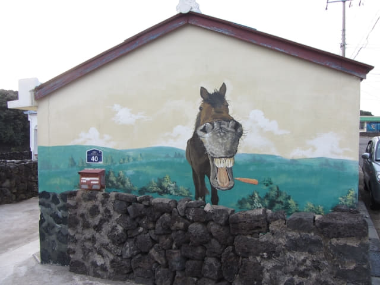
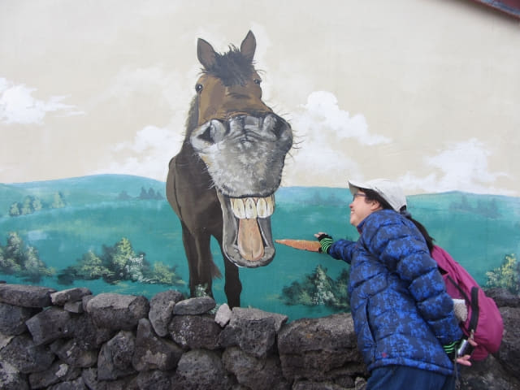
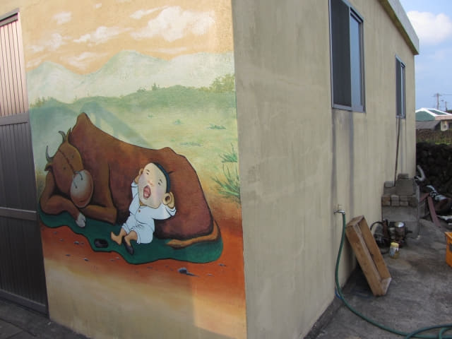
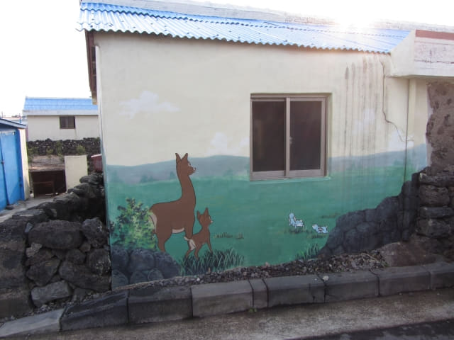
繼續沿馬路一直走, 還未抵達高速公路。幸好還未天黑, 其實從海濱往高速公路的距離也不近的。
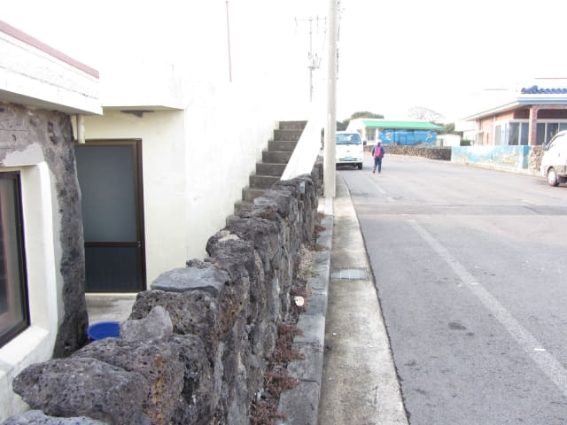
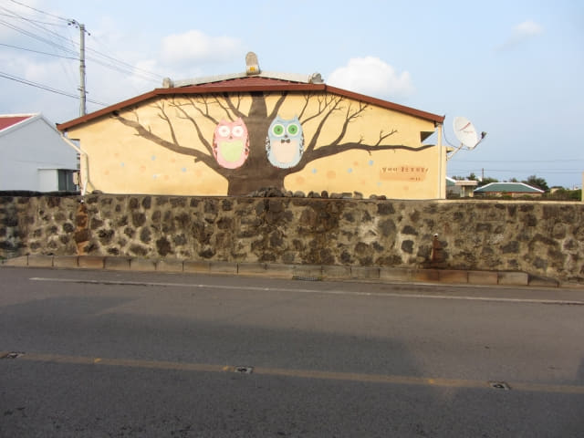
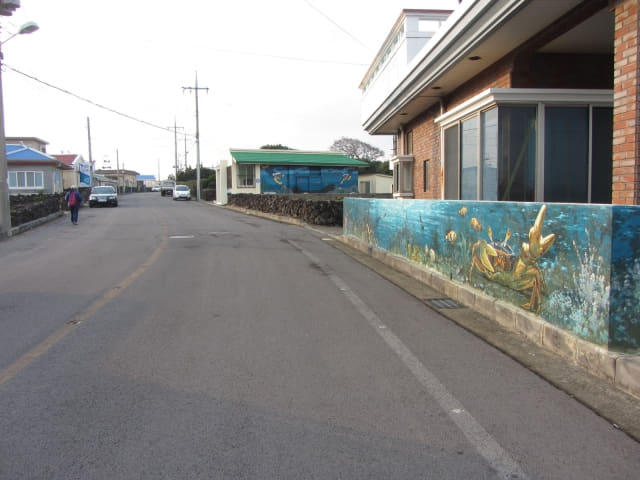
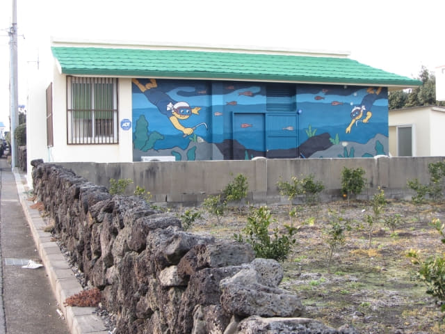
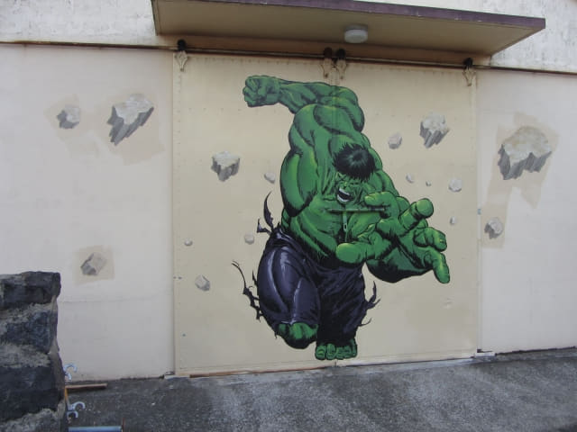
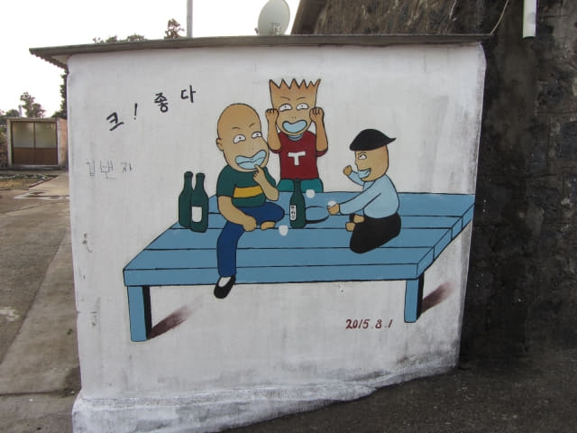
沿馬路一直走。
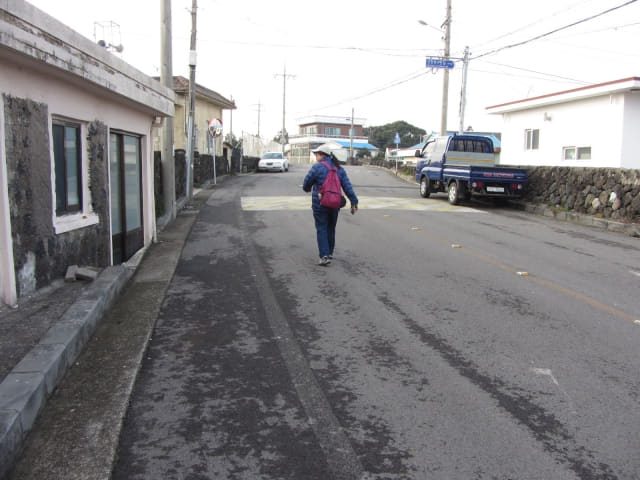
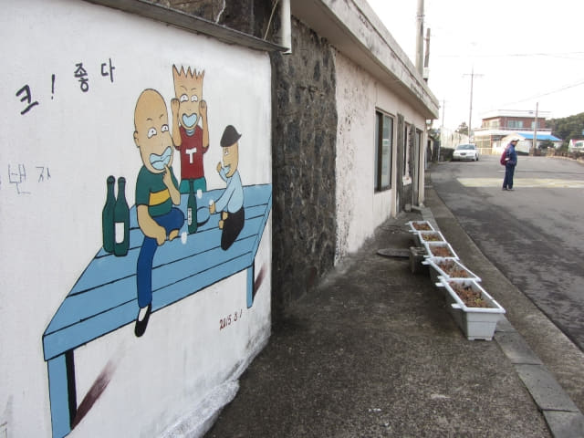
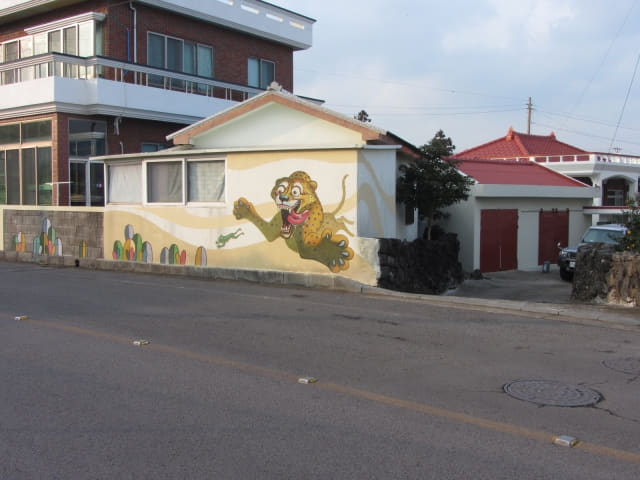
繼續沿馬路一直走。
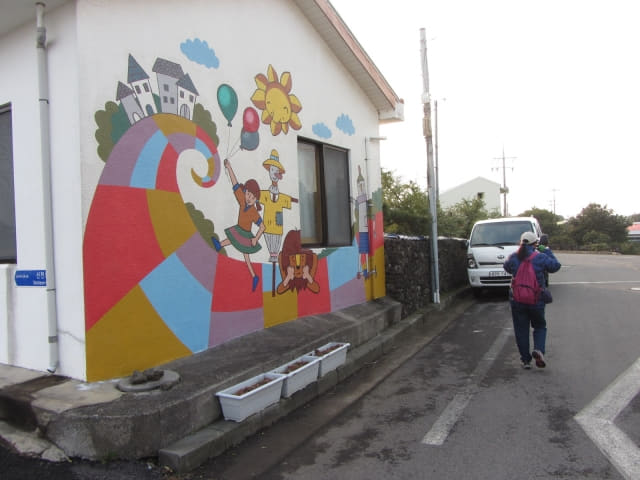
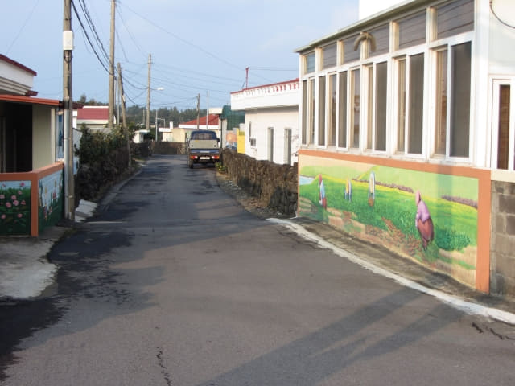
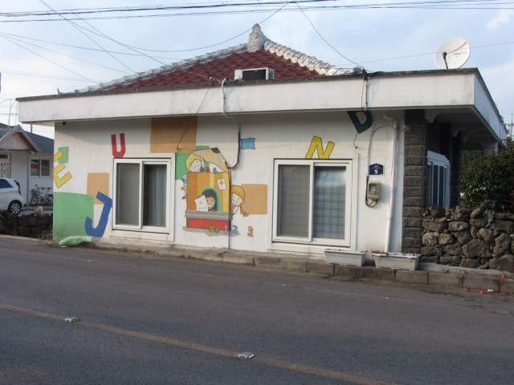
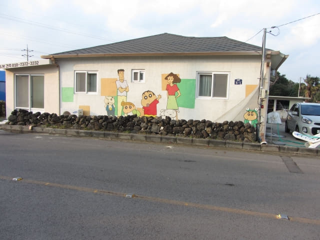
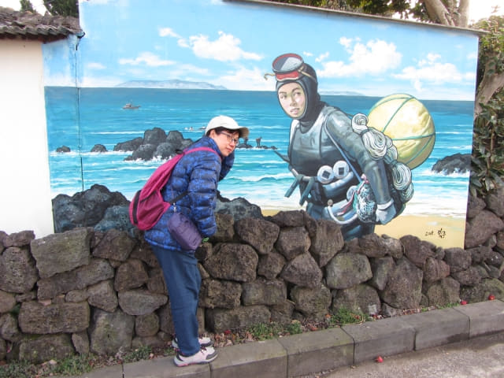
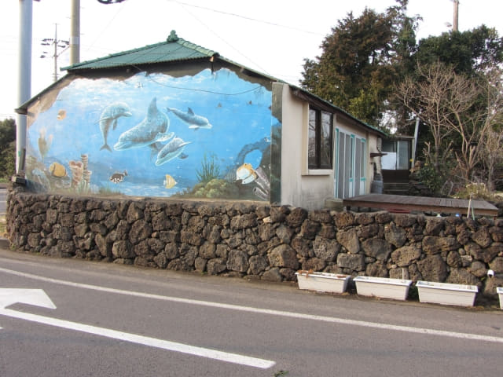
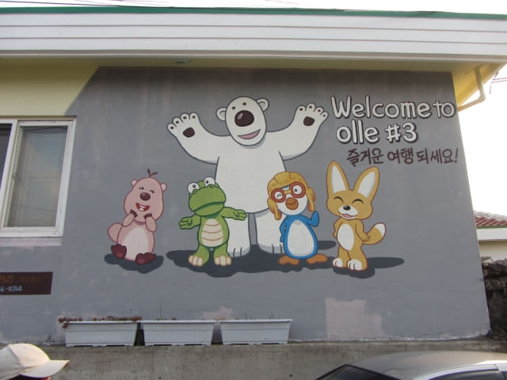
新川里壁畫村入口
經過無數色彩繽紛的壁畫, 穿過新川里壁畫村, 迎面是一條寬闊馬路, 川流不息的汽車繁忙地穿梭著, 終於來到高速公路了! 路口豎立了新川里的石碑和一些壁畫, 這裡才是新川里壁畫村的入口!